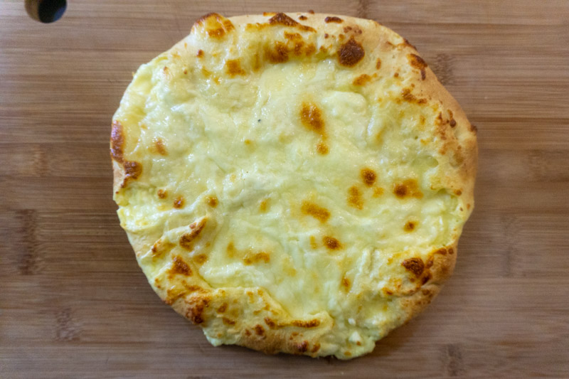

Megruli Khachapuri

Ingredients
Dough
- 75ml (1/3 cup) warm milk, heated to 43°C or 110°F
- 2g (1/2 teaspoon) active dry yeast
- 1 large egg
- 15ml (1 tablespoon) sunflower oil
- 200g (7oz or 1 2/3 cup) all-purpose flour
- 8g (1 teaspoon) salt
Filling
- 200g (7oz) Imeruli cheese,* grated
- 150g (3.5 oz) Sulguni cheese,* grated
- 1 large egg
Instructions
Dough
- In a small bowl, whisk yeast into milk until dissolved. Set aside until slightly foamy and very fragrant, about 5-10 minutes. Whisk in egg and oil until well combined. Set aside.
- In a large mixing bowl, whisk together flour and salt. Make a well in the centre and pour in wet ingredients. Using a wooden spoon or silicone spatula, stir until a dry, shaggy dough forms. Turn out onto a clean work surface and knead until the dough become smooth, supple and is just barely tacky, about 5-10 minutes.
- Transfer to a lightly oiled bowl, cover with plastic or a damp tea towel and move to a warm place. Let rise until doubled in size, about one hour.
Filling & Assembly
- Preheat oven to 220C/425F
- In a small bowl, combine the Imeruli cheese, 100 grams of the sulguni cheese and the egg. Mix to combine and set aside.
- Gently punch down your dough and turn it out into a lightly floured work surface. Roll the dough in a circular shape until it reaches about 25 centimetres (10 inches) in diameter. Pile the filling into the centre, patting it into a disk and leaving a 5-centimetre (3-inch) perimeter of dough around the edges. Pleat the dough around the filling, pinching it to seal the filling completely.
- Gently roll the khachapuri out, ensuring the filling is completely sealed in until it reaches about 35 centimetres (14 inches) in diameter. Cut a small steam vent in the centre of the khachapuri.
- Sprinkle remaining 50 grams of sulguni over the khachapuri.
- Transfer to a parchment-lined baking sheet. Bake until cheese is melted and the khachapuri is puffed and lightly golden brown, about 10-15 minutes. Transfer to a wire rack and allow to cool for about five minutes before slicing and serving.
Notes
If you can't find Imeruli or sulguni cheese, substitute an equal amount of feta for the Imeruli and low moisture, whole-milk mozzarella for the sulguni
Return to main page